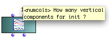
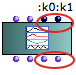
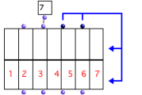
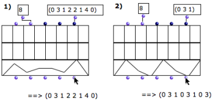
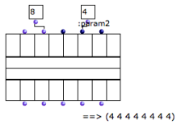
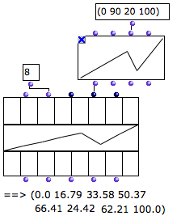
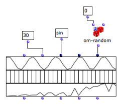
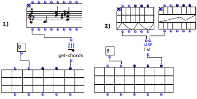

OpenMusic DocumentationHiérarchie de section : OM 6.6 User Manual > Basic Tools > Array > Class-Array Object
OpenMusic DocumentationHiérarchie de section : OM 6.6 User Manual > Basic Tools > Array > Class-Array Object
Navigation : page précédente | page suivante
Attention, votre navigateur ne supporte pas le javascript ou celui-ci à été désactivé. Certaines fonctionnalités de ce guide sont restreintes.
Class-Array Object
The class-array box is accessed via the Classes / Basic Tools / Array menu.
Properties
Columns and Lines
The class-array box has a number of columns , called " components " and a variable number of rows or lines , called " fields ".
Default Inputs and Outputs

|
The class-array box has two default inputs and outputs
|
Keyword Inputs
The class-array can be added a number of keyword arguments , which represent the fields of the matrix. Each keyword input has a corresponding output. |

|
Rows and Columns
Use and Definition

An empty class-array with 2 fields – rows – and 7 components – columns.
|
Each column represents a component . Each line or row in the matrix display represents a field , which corresponds to one of the keyword inputs of the box.
|
Slots / Subclasses
The class-array is designed to be used as a superclass for array classes with default fields.
Subclasses[1] can be created either with Lisp code, or visually in OMExamples of class-array subclasses are the classes from the OMChroma system for the control of sound synthesis.
Creating Subclasses
Keyword Inputs Name and Value
By default, keyword inputs – additional fields – are called ":k1", ":k2", etc...
To modify these names :
1. click on the input
2. enter a name starting with ":"
The value of keyword inputs must come from a connected box.
Keyword Inputs
Instantiation
The class-array has an original and powerful instantiation system that interprets the input data connected to its different filed inputs automatically. If needed, input data is converted to generate and fill all the components values internally, depending on the given number of columns.
Applying a List of Values

If necessary, values are repeated.
The list fits the number of components. The items contained in each list are assigned to the successive components.
If the number of items is superior to the number of components, the list is repeated.
Applying a Single Value
A single value is repeated for every component of the array. |

The constant value is repeated for all the components.
|
Resampling BPFs

Eight values are sampled periodically in the curve.
|
A BPF can be resampled according to the number of components of the class-array . Hence, each component can be assigned a value , no matter how many points the BPF has. This class-array contains eight components, or columns.
Note that using the "x-points" or "y-points" instead of the "self" output of the BPF amounts to feeding the array with a list of value. |
Applying Functions
If a function or a box on "lambda" mode is connected to a field of the array, it is applied to the components of the field at the evaluation. Here, arrays # 1 and 3 are instantiated with two functions :
|

Instantiating arrays with the sinus and om-random functions.
|
Creating Arrays with Objects
Objects Lists
Objects, such as notes , chords , or any object in OM, can also be used for filling the matrix fields. These objects must be connected as a list to the class-array inputs.

This procedure also allows, for instance, to create arrays of arrays, as in example 2 above.
Advanced Issue : Row Types
In class-array subclasses , the type of a subclass field may change the way input data is interpreted.
Références :
Subclass
A subclass is derived from a preexisting class, by inheritance. In object-oriented programming, objects are defined by classes. New objects can be created from existing objects. As objects are defined by classes, classes can inherit other classes. Sub-classes inherit attributes and behavior of the pre-existing classes, or super-classes. Code is compartmentalized and reused by creating collections of attributes and behaviors called objects which can be based on previously created objects.
Plan :
- OpenMusic Documentation
- OM 6.6 User Manual
- Introduction
- System Configuration and Installation
- Going Through an OM Session
- The OM Environment
- Visual Programming I
- Visual Programming II
- Basic Tools
- Curves and Functions
- Array
- Class-Array Object
- Class-Array Editor
- Class-Array Tools
- TextFile
- Picture
- Score Objects
- Maquettes
- Sheet
- MIDI
- Audio
- SDIF
- Lisp Programming
- Errors and Problems
- OpenMusic QuickStart
Navigation : page précédente | page suivante
A propos...(c) Ircam - Centre Pompidou